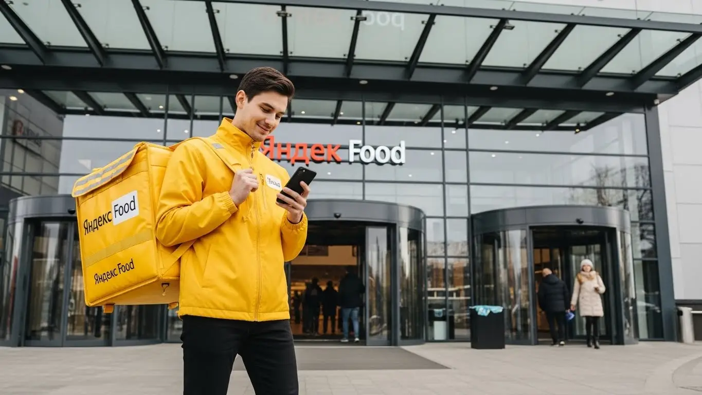

Яндекс Еда Северодвинск 2025-2026: доход, график, условия
- Работа курьером Яндекс Еды в Северодвинске: для кого эта вакансия и что вы получите
- Сколько вы будете зарабатывать курьером в Северодвинске: калькулятор дохода и разбор выплат
- Реальный заработок курьера в Северодвинске: смены и месячный доход
- График работы и форматы занятости
- Требования к кандидату и документы
- Самозанятость, налоги и юридическая чистота
- Пошаговое оформление и первый выход на линию в Северодвинске
- Пешком, на вело или на авто: что выгоднее в Северодвинске
- Районы, маршруты и «топовые» зоны заказов в Северодвинске
- Безопасность, страховка, штрафы и оплата простоя
- Плюсы и возможные минусы работы курьером в Северодвинске
- Ответы на главные вопросы о работе курьером Яндекс Еды в Северодвинске
- Итоги и ваш следующий шаг
Все города
Думаешь о работе курьером Яндекс Еды в Северодвинске? Наверняка в голове крутится: «А сколько тут реально можно заработать? Не убью ли машину на наших дорогах за копейки? Как вообще по Северодвинску развозить заказы, когда на улице минус двадцать и метель, или когда на Ягры пробка?» Эти вопросы — норма, и я сам через них проходил. Сразу скажу: это не та работа, где можно просто выйти и сразу грести деньги лопатой. Особенно здесь, в нашем городе, со всеми его особенностями.
Многие новички в Северодвинске набивают одни и те же шишки: не учитывают, что зимой расход бензина выше, а велосипед вообще не вариант. Или что в час пик, когда работяги с Севмаша едут домой, по Архангельскому шоссе лучше не соваться. Без понимания местной «кухни» — где спрос выше, как работают алгоритмы Яндекса именно у нас, какие районы самые «рыбные», а какие лучше объезжать — легко разочароваться уже в первый месяц. Тут важен каждый нюанс: от особенностей трафика возле ТЦ «Макси» до того, как система рейтинга и приоритета влияет на твой заработок в спальных районах вроде Кварталов. Если ты живёшь в Северодвинске, то подробнее про работу курьером Яндекс Еда в Северодвинске, включая краткую сводку условий, FAQ, детальный калькулятор и форму заявки, можно почитать здесь: работа курьером Яндекс Еда в Северодвинске.
В этой статье я не буду лить воду и обещать золотые горы. Мы разберём всё по полочкам, как есть. Выясним, сколько реально зарабатывает пеший, вело- и автокурьер в Северодвинске, учитывая наши северные реалии. Посчитаем, какие расходы тебя ждут и как их минимизировать. Покажу на примерах, где в городе больше всего заказов, как погода влияет на доход и почему зимой работать выгоднее. Расскажу, как избежать штрафов, которые могут съесть половину заработка, и чем Яндекс Еда отличается от других доставок именно в Северодвинске. И, конечно, поделюсь отзывами реальных местных курьеров.
Я сам не первый год в этой теме, начинал курьером, а сейчас у меня небольшой таксопарк-партнёр. Так что про работу «на колёсах» и с заказами знаю не понаслышке, тем более в Северодвинске. Давай по порядку, сейчас всё разложу по полочкам, чтобы ты не повторял чужих ошибок и сразу начал зарабатывать эффективно. Это будет честный разговор, без рекламной шелухи, прямо от старшего брата по цеху.
Чтобы тебе было проще разобраться во всех нюансах и быстро найти нужную информацию, мы подготовили короткий навигатор по ключевым темам статьи.
Что ты точно узнаешь из этого разбора о работе курьером в Северодвинске
В этой статье ты ТОЧНО узнаешь:
- Сколько реально можно заработать курьером в Северодвинске за смену и месяц, и от чего зависит доход?
- Где в Северодвинске больше всего заказов и как выбирать «рыбные» районы, чтобы не простаивать?
- Какой тип доставки (пеший, вело, авто) выгоднее именно в Северодвинске, учитывая погоду и расстояния?
- Как быстро оформить самозанятость и сколько налогов нужно платить, чтобы работать легально?
- За что могут оштрафовать, и как Яндекс Еда защищает доход курьера от простоев и несчастных случаев?
- Что нужно для старта и можно ли начать работать без опыта уже сегодня?
А если тебе некогда читать всю статью — переходи сразу к заключению, где ты найдёшь короткие ответы на все эти вопросы и указания, в каких разделах искать подробности.
А для наглядности, вот тебе инфографика с основными цифрами и фактами о работе курьером в Северодвинске.
Ключевые показатели работы курьером в Северодвинске
Работа курьером Яндекс Еды в Северодвинске: для кого эта вакансия и что вы получите
Кому подойдёт эта работа в Северодвинске
Работа курьером Яндекс Еды в Северодвинске — это отличный вариант для тех, кто ищет гибкий график и стабильный доход. Эта вакансия идеально подходит студентам, которым нужна подработка после пар или на выходных, ведь можно легко совмещать учёбу с работой. Также это хороший старт для людей без опыта, так как специальных навыков не требуется, а обучение проходит быстро и онлайн через приложение Яндекс Про.
Многие водители, у которых есть личный автомобиль, рассматривают эту возможность как дополнительный заработок или даже основную занятость. Свободный график позволяет самостоятельно планировать смены, что особенно ценно для тех, кто хочет контролировать своё время. К тому же, ежедневные выплаты на карту — это серьёзное преимущество, когда деньги нужны здесь и сейчас. Для получения выплат необходимо оформить самозанятость, что делается быстро и просто.
Главные преимущества для жителей районов Ягры, Новый город, Старый город
Одно из ключевых преимуществ работы курьером Яндекс Еды в Северодвинске — это возможность выбирать зоны доставки, что позволяет работать рядом с домом. Например, если ты живёшь на Яграх, можешь брать заказы прямо в своём районе, не тратя время на долгие поездки через весь город. Такой подход экономит не только время, но и деньги на проезд или топливо.
Жители Нового города или Старого города также могут сосредоточиться на своих локациях, где всегда есть кафе, рестораны и магазины, подключенные к сервису Яндекс Еда. Это позволяет эффективно использовать время, быстро доставлять заказы и, соответственно, больше зарабатывать. В Северодвинске, где районы достаточно компактны, хорошо ориентироваться на знакомых улицах особенно удобно для быстрого выполнения доставок.
Краткое обещание по доходу и условиям
В Северодвинске курьеры Яндекс Еды могут рассчитывать на вполне достойный заработок. Реальный доход за смену при активной работе составляет от 2000 до 4000 рублей. При полной занятости за месяц можно выйти на сумму от 40 000 до 80 000 рублей и выше. Всё зависит от количества отработанных часов, выбранных слотов в Яндекс Про и типа доставки.
Сервис предлагает свободный график, что даёт тебе полную свободу в планировании своего дня. Ты сам решаешь, когда и сколько работать. Кроме того, для начала работы не требуется никакого опыта, а все выплаты производятся ежедневно, что обеспечивает финансовую стабильность и уверенность в завтрашнем дне.
Кейс из практики:
Мой знакомый, студент из Северодвинска, живёт в Новом городе. Он выходит на смены по 4-5 часов вечером после учёбы и в выходные дни. За неделю у него получается заработать около 10-12 тысяч рублей, работая пешим курьером в своём районе и иногда в центре. Главное, по его словам, — брать слоты в приложении Яндекс Про в часы пик, когда спрос на доставку максимален, и не бояться работать в любую погоду, ведь тогда и коэффициенты выше.
Вывод по разделу:
Работа курьером Яндекс Еды в Северодвинске — это доступный и гибкий способ заработка, подходящий для студентов, людей без опыта и тех, кто ищет подработку с ежедневными выплатами. Возможность работать в своём районе, будь то Ягры, Новый город или Старый город, значительно повышает удобство и эффективность. Чтобы максимизировать доход, выбирай слоты в часы повышенного спроса через Яндекс Про и не пренебрегай работой в знакомых локациях.
Сколько вы будете зарабатывать курьером в Северодвинске: калькулятор дохода и разбор выплат
Из чего складывается доход курьера
Заработок курьера Яндекс Еды в Северодвинске формируется из нескольких ключевых составляющих, и важно понимать каждую из них. Во-первых, это базовая оплата за каждый выполненный заказ, которая зависит от его сложности и типа. Во-вторых, к этому добавляется доплата за расстояние, пройденное от ресторана до клиента, что особенно актуально для автокурьеров, работающих по всему городу.
Кроме того, существуют повышающие коэффициенты, которые активируются в часы пик, в плохую погоду или в районах с высоким спросом, например, в центре Северодвинска или в районе ТЦ «Макси». Ты также можешь получать бонусы за выполнение определённого количества заказов или за работу в определённые часы. Не стоит забывать и про чаевые от благодарных клиентов, которые могут стать приятным дополнением к основному доходу. Важные преимущества — это оплата простоя, если заказов временно нет, и возможная компенсация проезда для автокурьеров, что защищает твой заработок и делает работу курьером более стабильной.
Как пользоваться калькулятором дохода
Чтобы прикинуть свой потенциальный заработок, используй калькулятор дохода на сайте или в приложении Яндекс Про. Это довольно просто: сначала выбери тип доставки, который тебе подходит — пеший курьер, велокурьер или автокурьер. Затем укажи, сколько часов в день ты планируешь работать и сколько дней в неделю готов выходить на линию.
После ввода этих данных калькулятор покажет тебе примерный дневной и месячный доход, который можно получить в Северодвинске. Конечно, это ориентировочные цифры, ведь реальный заработок зависит от многих факторов, включая твою активность, выбранные районы и время работы. Но это хороший инструмент, чтобы понять потенциал и спланировать свою занятость как курьера.
Примерный доход курьера в Северодвинске
Подвигай ползунки, чтобы прикинуть, сколько ты сможешь зарабатывать.
Примерный доход в день: 3200 ₽
Примерно часов в месяц: 160 часов
Примерный доход в месяц:
64 000 ₽
Расчёт примерный и не учитывает бонусы, повышающие коэффициенты и возможные простои — смотри подробный калькулятор и примеры в статье.
Хочешь узнать подробнее об условиях, посмотреть FAQ и заполнить заявку? Переходи по ссылке: работа курьером Яндекс Еда в твоём городе.
Примеры расчёта для пешего, вело- и авто‑курьера в Северодвинске
Давай рассмотрим несколько реальных сценариев для Северодвинска. Пеший курьер, работающий 4 часа в день в центре города (например, на улицах Ленина или Ломоносова) в вечерние часы, может зарабатывать от 1500 до 2000 рублей за смену. Заказы там плотные, расстояния небольшие, что позволяет быстро выполнять несколько доставок.
Велокурьер, который активно работает 6-7 часов в день, перемещаясь между спальными районами, такими как Новый город и Ягры, может рассчитывать на 2500-3500 рублей. Велосипед даёт преимущество в скорости и позволяет избегать пробок. А вот водитель-курьер, работающий 8-10 часов по всему городу, включая более отдалённые районы или даже редкие заказы за город, при хорошей загрузке может заработать от 4000 до 6000 рублей за смену. В плохую погоду или в выходные дни эти суммы могут быть ещё выше за счёт повышенных коэффициентов, что делает работу курьером Яндекс Еды ещё выгоднее.
Кейс из практики:
Недавно один из моих автокурьеров в Северодвинске, Сергей, отработал полный день в субботу. Он начал с утра в районе ТЦ «ЦУМ», где много кафе, затем переместился в сторону Нового города. В обед и вечером, когда спрос был максимальным, Сергей брал заказы по повышенным коэффициентам через приложение Яндекс Про. За 9 часов работы, включая несколько дальних доставок, он заработал 5800 рублей, из которых около 300 рублей были чаевыми. Это хороший пример того, как можно заработать, если правильно выбирать слоты и зоны для работы курьером.
Сравнение потенциального дохода по типам курьеров в Северодвинске
| Параметр | Пеший курьер | Велокурьер | Автокурьер |
|---|---|---|---|
| Средний доход за смену (4-6 часов) | 1500 – 2500 ₽ | 2000 – 3500 ₽ | 3000 – 5000 ₽ |
| Средний доход за месяц (полная занятость) | 35 000 – 55 000 ₽ | 45 000 – 70 000 ₽ | 60 000 – 90 000+ ₽ |
| Основные преимущества | Не требует вложений, полезно для здоровья, удобно в центре | Быстро, маневренно, экологично, оплачиваемый фитнес | Комфорт, большие заказы, работа по всему городу, в любую погоду |
| Оптимальные районы в Северодвинске | Центр, Старый город, плотная застройка | Новый город, Ягры, между спальными районами | Весь город, включая отдалённые районы и ТЦ «Макси» |
Вывод по разделу:
Твой заработок курьером в Северодвинске напрямую зависит от типа доставки, активности и умения использовать повышающие коэффициенты в приложении Яндекс Про. Важно понимать, что доход складывается не только из оплаты за заказ, но и из доплат за расстояние, бонусов и чаевых, а также защиты в виде оплаты простоя. Используй калькулятор для планирования и выбирай формат работы, который максимально соответствует твоим возможностям и предпочтениям. Помни, что автокурьеры обычно зарабатывают больше за счёт объёма и дальности заказов, но и пешие с велокурьерами могут хорошо зарабатывать в правильных зонах Северодвинска.
Реальный заработок курьера в Северодвинске: смены и месячный доход
Если ты присматриваешься к работе курьером в Северодвинске, то, конечно, главный вопрос — сколько реально можно заработать. Работа курьером в Яндексе привлекает многих гибкостью и возможностью получать ежедневные выплаты. Важно понимать, что доход курьера — это не фиксированная зарплата, а сумма, которая зависит от многих факторов: сколько часов ты готов работать, на чем доставляешь, и даже от погоды. Однако при правильном подходе и знании города, ты, как самозанятый курьер, можешь рассчитывать на стабильный и хороший заработок.
Мы с тобой разберем, как формируется заработок, какие вилки дохода существуют для разных форматов занятости и как опытные курьеры в Северодвинске увеличивают свои чеки. Помни, что "сколько платят" — это не только про базовую ставку, но и про бонусы, коэффициенты и, конечно, чаевые.
Диапазон дохода для подработки и полной занятости
Давай посмотрим на конкретные цифры, какой доход может принести работа курьером в Северодвинске, в зависимости от того, как ты планируешь работать. Для подработки, когда ты выходишь на 2–4 часа в день, например, после основной работы или учебы, пеший курьер может рассчитывать на 800–1500 рублей. Велокурьер за это же время, благодаря большей мобильности, часто получает 1000–2000 рублей. Автокурьер, конечно, берет самые дальние и дорогие заказы, поэтому его заработок за 2–4 часа может достигать 1500–2500 рублей.
Если же ты нацелен на полную занятость, работая 8–10 часов в день, картина меняется. Пеший курьер в Северодвинске может стабильно получать 2500–4000 рублей в день, особенно если сосредоточится на плотных районах Старого города или вокруг ТЦ «ЦУМ». Велокурьер, активно перемещаясь между районами, такими как Новый город и Ягры, способен заработать 3500–5500 рублей. А вот автокурьер, который может охватывать весь город и даже пригороды, в пиковые дни легко выходит на 5000–8000 рублей. Это реальные цифры, которые показывают, сколько можно заработать в Яндекс Доставке, если подойти к делу серьезно и выполнять заказы эффективно.
| Тип курьера | Подработка (2-4 часа/день) | Полная занятость (8-10 часов/день) | Месячный доход (полная занятость, 20-22 дня) |
|---|---|---|---|
| Пеший курьер | 800–1500 ₽ | 2500–4000 ₽ | 50 000–80 000 ₽ |
| Велокурьер | 1000–2000 ₽ | 3500–5500 ₽ | 70 000–110 000 ₽ |
| Автокурьер | 1500–2500 ₽ | 5000–8000 ₽ | 100 000–160 000 ₽ |
Кейс из практики: Мой знакомый, Сергей, автокурьер в Северодвинске, работает 5/2 по 9 часов. Он обычно начинает в 10 утра, фокусируется на заказах из центральных кафе и ресторанов, а после обеда переключается на доставки из гипермаркетов в районе ТЦ «Макси» и в сторону Ягр. За месяц у него выходит около 120 000 рублей чистого дохода, учитывая топливо и амортизацию. Он говорит, что главное — не сидеть без дела и брать заказы с хорошими коэффициентами, особенно вечером.
Как район, время суток и погода влияют на доход
В Северодвинске, как и везде, есть свои «рыбные» места и часы. Больше всего заказов и, соответственно, выше доход, ты получишь в пиковые часы: это обеденное время (с 12:00 до 14:00) и вечер (с 18:00 до 22:00), особенно в выходные. В эти периоды сервис часто вводит повышающие коэффициенты, что значительно увеличивает оплату за один заказ. Также стоит обратить внимание на районы с высокой плотностью кафе и магазинов, например, проспект Ленина, проспект Труда и окрестности крупных торговых центров, таких как «Сити» или «ЦУМ».
Погода в Северодвинске играет огромную роль. Когда на улице дождь, сильный ветер или, что особенно актуально зимой, снегопад и гололед, количество заказов резко возрастает, а число активных курьеров, наоборот, падает. В такие моменты Яндекс Еда и Яндекс Доставка предлагают максимальные повышающие коэффициенты, чтобы стимулировать курьеров выходить на линию. Кроме того, в плохую погоду клиенты чаще оставляют чаевые, понимая, насколько тяжело работать в таких условиях. Это отличный способ увеличить заработок, если ты готов к небольшим трудностям.
Советы по увеличению заработка от опытных курьеров
Чтобы зарабатывать больше, не обязательно работать дольше. Важно работать умнее. Во-первых, всегда старайся брать слоты в пиковые часы и в районах с высоким спросом. Приложение «Яндекс Про» показывает зоны с повышенными коэффициентами — следи за ними. Во-вторых, не бойся комбинировать типы доставки. Если ты пеший курьер, но у тебя есть велосипед, используй его для более быстрых доставок между спальными районами, например, в Новом городе.
Опытные курьеры также советуют не игнорировать заказы из Яндекс Лавки и Яндекс Маркета, так как они часто бывают короткими и быстрыми, что позволяет выполнить больше доставок за час. Кроме того, поддерживай высокий рейтинг и активность — это дает приоритет в распределении заказов. Помни, что каждый выполненный заказ, особенно в сложных условиях, повышает твою репутацию и, как следствие, твой потенциальный доход.
Вывод по разделу: Реальный заработок курьера в Северодвинске сильно зависит от твоей активности и умения выбирать выгодные слоты и районы. При полной занятости автокурьеры могут рассчитывать на доход до 160 000 рублей в месяц, а пешие — до 80 000 рублей. Чтобы увеличить заработок, всегда ориентируйся на пиковые часы, плохую погоду и зоны с повышенным спросом, которые отображаются в приложении «Яндекс Про».
График работы и форматы занятости
Гибкий график — одно из главных преимуществ работы курьером в Яндексе, и в Северодвинске это особенно ценно. Ты сам решаешь, когда и сколько работать, что позволяет легко совмещать доставку с учебой, основной работой или личными делами. Это не просто слова, а реальная возможность строить свой день так, как удобно тебе, а не подстраиваться под жесткое расписание. Такой свободный график делает работу курьером доступной для многих.
Давай разберем, как это работает на практике, и какие форматы занятости наиболее популярны среди курьеров в нашем городе. От подработки на пару часов до полноценной смены — для каждого найдется свой оптимальный вариант.
Подработка после учёбы или основной работы
Многие в Северодвинске выбирают работу курьером как отличную подработку. Например, студенты Северного (Арктического) федерального университета (САФУ), филиал которого находится в городе, часто выходят на линию вечером, после пар. Они берут 3-4 часа в Старом городе или Новом городе, где много общежитий и кафе, и за это время успевают заработать 1000–1500 рублей. Это позволяет им покрывать текущие расходы и иметь карманные деньги.
Другой пример — люди с основной работой, которые хотят дополнительный доход. Они могут выходить на смены в выходные дни, например, по 6–8 часов. За два выходных дня такой курьер, работая на велосипеде или авто, может заработать от 5000 до 8000 рублей, доставляя заказы из ТЦ «Макси» или по жилым кварталам Ягр. Это существенная прибавка к основному доходу, которая не требует полной перестройки жизни.
Кейс из практики:
Мой сосед, студент, работает пешим курьером по вечерам с 18:00 до 22:00 в районе проспекта Ленина. Он выбирает слоты вблизи своего дома, чтобы не тратить время на дорогу. За 4 часа он обычно выполняет 5-7 заказов и зарабатывает около 1200-1600 рублей. В выходные он иногда берет утренние слоты, чтобы увеличить доход.
Полная занятость: как выглядит типичный день курьера
Для тех, кто выбирает полную занятость, типичный день курьера в Северодвинске начинается рано. Многие выходят на линию уже к 9-10 утра, чтобы захватить утренние заказы из пекарен и кофеен. Обычно курьеры выбирают центральные районы, такие как Старый город, или зоны с высокой плотностью офисов и жилых домов, например, Новый город. В обеденный пик (12:00–14:00) заказов становится очень много, и можно хорошо заработать на доставках еды.
После обеда наступает небольшой спад, который курьеры используют для перерыва, обеда или переезда в другой район. Вечерний пик (18:00–22:00) — это снова время активной работы, когда люди заказывают ужины домой. Автокурьеры часто берут заказы, которые ведут их из центра в отдаленные районы, например, на Ягры или в сторону Архангельского шоссе, где оплата за расстояние выше. В целом, день курьера — это чередование активной работы и коротких перерывов, с фокусом на пиковые часы.
Как планировать слоты и выходы через приложение «Яндекс Про»
Все планирование работы происходит через приложение «Яндекс Про». Там ты можешь заранее выбрать удобные слоты — это временные отрезки, когда ты готов принимать заказы. Слоты бывают разной продолжительности, и ты можешь выбрать те, что идеально вписываются в твой график. Важно бронировать слоты заранее, особенно в пиковые часы и выходные, так как они быстро разбираются.
Когда ты выходишь на линию, приложение покажет тебе карту спроса, где отмечены зоны с повышенными коэффициентами. Это помогает тебе выбирать наиболее выгодные районы для работы в Северодвинске. Очень важно не опаздывать на забронированные слоты и выполнять заказы качественно, ведь от этого зависит твой рейтинг. Высокий рейтинг и активность дают тебе приоритет в получении заказов и, как следствие, стабильный и высокий доход.
Вывод по разделу: Гибкий график работы курьером в Северодвинске позволяет каждому найти свой формат занятости — от нескольких часов в неделю до полного рабочего дня. Ключ к успеху — умелое планирование слотов через приложение «Яндекс Про» и выбор районов с высоким спросом, чтобы максимизировать свой заработок без лишних переработок.

Требования к кандидату и документы
Когда речь заходит о работе, многие сразу начинают переживать: а подойду ли я? Хватит ли мне опыта, возраста, здоровья? Сразу скажу, требования к курьерам Яндекс Еды довольно простые и понятные, никаких космических запросов тут нет. Главное — быть ответственным и готовым к активной деятельности. В Северодвинске это особенно актуально, ведь город не такой большой, и каждый курьер на виду. Здесь можно начать работу курьером Яндекс даже без большого опыта.
Например, у меня в таксопарке был парень, Денис, который сначала работал водителем, а потом решил попробовать себя в доставке. Ему было 20 лет, он уже имел стаж вождения, но переживал, что для работы курьером нужны какие-то особые навыки. Оказалось, что его обычного паспорта и желания выполнять заказы было достаточно. Он быстро освоился и теперь совмещает обе работы, когда есть свободное время, что подтверждает гибкий график. Это показывает, что стать курьером может практически каждый, кто соответствует базовым условиям.
В общем, не стоит бояться бюрократии или завышенных планок. Условия работы курьером Яндекс Еды в Северодвинске вполне адекватные. Если ты готов к активной работе и у тебя есть необходимые документы, то считай, что полдела сделано.
Возраст, гражданство и базовые условия
Начнем с самого простого. Для работы курьером в Яндекс Еде, будь то пеший курьер, велокурьер или автокурьер, тебе должно быть не меньше 18 лет. Это стандартное требование, которое действует по всей России, включая Северодвинск. Никаких исключений тут нет, так что если ты младше, придется подождать.
Что касается гражданства, то здесь тоже всё прозрачно: нужен паспорт гражданина РФ или одной из стран ЕАЭС (Армения, Беларусь, Казахстан, Кыргызстан). С этим документом ты можешь спокойно оформляться и начинать работу.
По здоровью и физической форме особых требований нет, но очевидно, что для пешего или велокурьера нужна выносливость. В Северодвинске, где зимой бывает снежно и скользко, а летом ветрено, это особенно важно. Ты должен быть готов к тому, что придется много ходить или крутить педали, иногда с термосумкой или термокоробом, которые не всегда легкие. Для водителя-курьера, конечно, главное — наличие водительских прав и исправный автомобиль.
Какие документы нужны для работы курьером
Теперь перейдем к документам. Это важный момент, но не сложный. Вот что тебе понадобится, чтобы стать курьером Яндекс Еды:
- Паспорт гражданина РФ или страны ЕАЭС. Это твой основной документ, подтверждающий личность и гражданство.
- ИНН (индивидуальный номер налогоплательщика). Он нужен для оформления самозанятости и уплаты налогов.
- Банковская карта. На неё будут приходить все твои выплаты. Важно, чтобы карта была оформлена на твоё имя.
- Смартфон на базе Android. Приложение «Яндекс Про», через которое ты будешь брать заказы, работает только на Android.
Иногда может потребоваться медицинская книжка. Это не всегда обязательно для всех заказов, но если ты планируешь доставлять еду из ресторанов или работать с продуктами, то медкнижка может понадобиться. Лучше уточнить этот момент при регистрации. Подготовить все эти документы заранее очень просто: достаточно иметь оригиналы и сделать их качественные фотографии для онлайн-анкеты.
Можно ли работать с 16 лет и какие есть альтернативы
Как я уже говорил, в Яндекс Еде в Северодвинске, как и везде, минимальный возраст для работы курьером — 18 лет. Это связано с законодательством и особенностями работы, которая предполагает полную ответственность за доставку и взаимодействие с клиентами. Так что, если тебе 16 или 17 лет, устроиться курьером в Яндекс Еду пока не получится.
Но не расстраивайся, это не конец света! Есть много других вариантов подработки для подростков. Например, можно поискать вакансии промоутером, помощником в магазинах или кафе, расклейщиком объявлений. В Северодвинске всегда есть спрос на такие подработки, особенно в летний период или перед праздниками. Некоторые местные компании готовы брать на работу несовершеннолетних с согласия родителей и соблюдением всех норм Трудового кодекса РФ, касающихся рабочего времени и условий труда для подростков.
Самозанятость, налоги и юридическая чистота
Вопрос «официальности» и налогов часто пугает новичков. Многие привыкли к стандартной трудовой книжке и зарплате «в конверте». Но в Яндекс Еде всё работает по-другому, и это, на мой взгляд, гораздо удобнее и прозрачнее. Ты работаешь как самозанятый курьер, и это абсолютно легально.
У меня был случай, когда один из водителей, Николай, долго сомневался, стоит ли переходить на самозанятость. Он привык к старой схеме, где за него всё платил работодатель. Но когда я объяснил ему, как это просто и сколько времени экономит, он решился. Теперь он сам управляет своими налогами через приложение и говорит, что это намного удобнее, чем он думал. Никаких походов в налоговую, никаких сложных расчетов.
Так что, если ты переживаешь за юридическую сторону вопроса, отбрось сомнения. Система самозанятости создана для таких гибких форматов работы, как доставка, и она максимально упрощена.
Почему курьеры Яндекс Еды работают как самозанятые
Формат самозанятости, или Налог на профессиональный доход (НПД), — это современное и удобное решение для тех, кто работает на себя. Яндекс Еда сотрудничает с курьерами именно по этой схеме, и вот почему это выгодно всем. Во-первых, твой доход становится официальным. Это значит, что ты не работаешь «вчерную», а все твои доходы фиксируются, и ты можешь подтвердить свою платежеспособность, например, для получения кредита.
Во-вторых, самозанятость исключает сложную бухгалтерию. Тебе не нужно нанимать бухгалтера или разбираться в дебрях налогового кодекса. Все расчеты и отчетность происходят через простое мобильное приложение «Мой налог». Это очень удобно, особенно для тех, кто никогда не сталкивался с налогами. В-третьих, это полностью легально. Ты платишь налоги, спишь спокойно и не переживаешь о возможных проблемах с государством. Для Яндекс Еды это также удобно, так как упрощает взаимодействие с тысячами курьеров по всей стране, включая Северодвинск.
Как за 10 минут оформить самозанятость через «Мой налог»
Оформить самозанятость — дело нескольких минут, и это не преувеличение. Тебе понадобится только смартфон и доступ в интернет. Вот пошаговая схема, чтобы стать самозанятым курьером:
- Скачай приложение «Мой налог». Оно доступно бесплатно в App Store и Google Play.
- Зарегистрируйся. Для этого тебе понадобится паспорт (отсканируй его через камеру смартфона) и ИНН. Система сама проверит твои данные.
- Привяжи банковскую карту. Это нужно для того, чтобы налоговая могла автоматически списывать налог с твоего дохода.
- Укажи вид деятельности. Выбери «Услуги по доставке» или что-то похожее.
Вся процедура занимает от силы 5-10 минут. После этого ты сразу становишься самозанятым и можешь начинать выполнять заказы. Некоторые официальные партнеры Яндекс Еды также предлагают помощь в оформлении самозанятости, что может быть удобно, если у тебя возникнут вопросы.
Сколько и как платить налоги
Налоговая ставка для самозанятых курьеров очень выгодная. Если ты получаешь доход от физических лиц, то платишь 4%. Но поскольку Яндекс Еда — это юридическое лицо, то с доходов от сервиса ты будешь платить 6%. Это фиксированная ставка, которая не меняется в зависимости от суммы заработка.
Процесс оплаты налогов максимально упрощен. Тебе не нужно ничего считать самому. Приложение «Мой налог» автоматически формирует чеки по каждому твоему доходу от Яндекс Еды и в конце месяца присылает уведомление с суммой налога. Ты просто подтверждаешь оплату, и деньги списываются с привязанной карты. Это гораздо проще и безопаснее, чем работать неофициально или получать «серый» кеш. Во-первых, ты защищен законом, а во-вторых, не рискуешь получить штрафы за неуплату налогов. В Северодвинске, как и везде, налоговая служба работает четко, поэтому лучше сразу оформить всё по правилам.

Пошаговое оформление и первый выход на линию в Северодвинске
Ну что, давай разберемся, как начать работу курьером в Яндекс Еде в Северодвинске. Многие думают, что это сложно, но на самом деле путь до первого заказа очень простой и понятный. Я сам через это проходил, и могу сказать, что всё сделано максимально удобно для новичков, даже если у тебя нет опыта.
Главное — не бояться бюрократии. Весь процесс, чтобы стать курьером Яндекс, максимально упрощен. Тебе не нужно собирать кучу справок или проходить долгие собеседования. Все можно сделать онлайн, включая оформление самозанятости, а потом быстро получить необходимое оборудование и выйти на линию, чтобы начать зарабатывать.
Шаг 1–2: анкета и онлайн‑обучение
Первое, с чего начинается любая работа курьером в Яндексе, это заполнение анкеты. Ты заходишь на сайт или в приложение Яндекс Про, указываешь свои базовые данные: ФИО, номер телефона, город Северодвинск, и выбираешь тип доставки, который тебе подходит – пеший курьер, велокурьер или водитель-курьер. Это занимает буквально несколько минут.
После заполнения анкеты твои данные проверяются, а затем тебе предложат пройти короткое онлайн-обучение. Это не скучные лекции, а интерактивные материалы с видео и тестами. Там расскажут про стандарты сервиса Яндекс Еда, как общаться с клиентами, как правильно доставлять заказы и, конечно, про правила безопасности на дороге и при работе с едой. В конце обучения нужно будет пройти небольшой тест, чтобы убедиться, что ты усвоил основные моменты. Это важно, чтобы ты понимал, как работать эффективно и без ошибок, а также как увеличить свой доход.
Шаг 3: получение сумки и доступа к заказам в Северодвинске
Как только обучение пройдено и тест сдан, следующим шагом будет получение термосумки и фирменной экипировки. В Северодвинске это можно сделать несколькими способами. Обычно это происходит через официальных партнеров сервиса или в специальных пунктах выдачи.
Точные адреса этих точек ты всегда найдешь в приложении Яндекс Про. Просто открой его, посмотри на карте ближайший пункт, и тебе выдадут всё необходимое, чтобы стать курьером: термокороб, чтобы еда оставалась горячей или холодной, и брендированную одежду. Иногда есть возможность заказать доставку сумки прямо домой, но это лучше уточнить в приложении.
Шаг 4: первый слот и первый доход
Вот ты и готов к первому выходу на линию! В приложении Яндекс Про ты увидишь доступные слоты – это временные отрезки, когда можно брать заказы. Выбирай удобное время и знакомый район Северодвинска, например, Ягры или Старый город, чтобы было проще ориентироваться. Это и есть твой свободный график.
Как только ты выберешь слот и выйдешь на линию, приложение начнет предлагать тебе заказы. Не переживай, если сначала будет немного непривычно. Главное – следовать инструкциям в приложении, и ты быстро освоишься. Многие новички получают свой первый доход уже в тот же день или на следующий, ведь Яндекс предлагает ежедневные выплаты, как только пройдут все этапы оформления.
Кейс из практики:
Мой знакомый, студент из Северодвинска, решил попробовать себя в Яндекс Еде. Заполнил анкету вечером, на следующий день утром прошел обучение и забрал сумку в пункте выдачи на проспекте Ленина. Уже к обеду он взял свой первый слот на 4 часа в районе Квартала 133 и заработал около 1500 рублей, доставляя заказы из местных кафе. Он был удивлен, как быстро можно начать получать деньги, даже без опыта.
Вывод по разделу:
Процесс оформления в Яндекс Еде максимально упрощен и не займет много времени. От заполнения анкеты до первого заказа можно дойти за один-два дня, а все необходимые инструкции и поддержку ты найдешь в приложении Яндекс Про. Чтобы быстро начать зарабатывать, получить стабильный доход и воспользоваться преимуществами свободного графика и ежедневных выплат, сразу после регистрации пройди обучение и уточни, где в Северодвинске можно получить термосумку. Так ты быстро станешь курьером Яндекс и начнешь получать свою зарплату.
Пешком, на вело или на авто: что выгоднее в Северодвинске
Выбор транспорта для работы курьером в Северодвинске — это не просто вопрос удобства, это еще и вопрос эффективности и заработка. Город у нас хоть и не миллионник, но имеет свои особенности: где-то плотная застройка, где-то широкие проспекты, а где-то и вовсе пригороды. Давай разберем, что выгоднее для разных условий, чтобы ты понимал, сколько реально зарабатывает курьер Яндекс в каждом случае.
Каждый тип доставки – пеший курьер, велокурьер или водитель-курьер – имеет свои преимущества и недостатки, которые напрямую влияют на твой потенциальный доход и комфорт работы. Важно выбрать тот, что лучше всего соответствует твоим физическим возможностям, наличию транспорта и районам, в которых ты планируешь работать, чтобы условия работы курьером Яндекс были для тебя оптимальными.
Пеший курьер: для центра и плотной застройки в Северодвинске
Пешая доставка отлично подходит для центральных районов Северодвинска, таких как Старый город или кварталы вокруг проспекта Ленина. Здесь много кафе, ресторанов и магазинов, а расстояния между ними небольшие. К тому же, в часы пик в центре бывают пробки, и пеший курьер часто может срезать путь через дворы или пешеходные зоны, что на машине или велосипеде не всегда возможно.
Для пешего курьера важна выносливость, но зато не нужно тратиться на бензин или обслуживание транспорта. Ты можешь эффективно работать в плотной застройке, где много многоэтажек и офисов, доставляя заказы быстро и без лишних сложностей с парковкой. Это отличный вариант для тех, кто хочет совместить работу с физической активностью и получать стабильный доход.
Велокурьер: быстрые доставки между спальными районами
Велокурьеры в Северодвинске – это золотая середина. На велосипеде ты быстрее пешего курьера, но при этом не зависишь от пробок, как автокурьер. Это идеальный вариант для работы между спальными районами, например, в Яграх или Квартале 133. Здесь расстояния уже побольше, чем в центре, но еще не такие, чтобы требовался автомобиль.
Преимущества велокурьера очевидны: скорость, маневренность, отсутствие затрат на топливо и, конечно, "оплачиваемый фитнес". Ты не только зарабатываешь, но и поддерживаешь себя в хорошей физической форме. В теплое время года это очень популярный и выгодный формат работы, позволяющий брать больше заказов за смену и увеличивать свой заработок.
Водитель‑курьер: заказы по всему городу и пригороду Нёнокса, Онега
Если у тебя есть личный автомобиль, то работа водителя-курьера открывает самые широкие возможности по заработку в Северодвинске. Ты можешь брать дальние заказы, которые недоступны пешим или велокурьерам, и работать по всему городу, а также доставлять в пригороды, такие как Нёнокса или Онега. Часто такие заказы поступают через Яндекс Доставку, Яндекс Маркет или Яндекс Лавку.
Особенно выгодно работать на авто в плохую погоду – дождь, снег, сильный ветер – когда пешим и велокурьерам сложнее, а спрос на доставку только растет. В часы пик, когда коэффициенты повышаются, водитель-курьер может быстро перемещаться между районами и выполнять больше заказов, что напрямую влияет на твой доход. Автомобиль дает комфорт и возможность брать крупные заказы, например, из Яндекс Маркета или Лавки.
Кейс из практики:
Мой водитель из таксопарка, Сергей, подрабатывает автокурьером в Яндекс Еде по вечерам. Он живет в Северодвинске, но часто берет заказы, которые ведут в Нёноксу или другие отдаленные районы. За 4-5 часов вечерней смены, особенно в выходные, он спокойно зарабатывает 3000-4500 рублей, потому что берет более дорогие и объемные заказы, которые пешим или велокурьерам не под силу. Это отличная подработка, которая приносит хороший доход.
| Параметр | Пеший курьер | Велокурьер | Водитель‑курьер |
|---|---|---|---|
| Районы работы | Центр, плотная застройка (Старый город, пр. Ленина) | Спальные районы, между кварталами (Ягры, Квартал 133) | Весь город, пригороды (Нёнокса, Онега) |
| Скорость доставки | Средняя, зависит от трафика и расстояний | Высокая, не зависит от пробок | Высокая, зависит от дорожной ситуации |
| Затраты | Минимальные (только на себя) | Низкие (обслуживание велосипеда) | Высокие (топливо, амортизация авто) |
| Физическая нагрузка | Высокая | Средняя/Высокая | Низкая/Средняя |
| Потенциальный доход | Средний | Выше среднего | Высокий |
Вывод по разделу: Выбор транспорта для работы курьером в Северодвинске напрямую влияет на твой заработок и комфорт. Пеший курьер идеален для центра, велокурьер – для спальных районов, а автокурьер – для всего города и пригородов. Чтобы максимизировать доход и узнать, сколько реально зарабатывает курьер Яндекс, выбирай формат, который лучше всего подходит под особенности города и твои возможности, особенно в пиковые часы и плохую погоду. Условия работы курьером Яндекс позволяют каждому найти оптимальный вариант, а такие преимущества, как оплата простоя и страхование во время доставок, делают эту работу еще более привлекательной.
Районы, маршруты и «топовые» зоны заказов в Северодвинске
Работая курьером в Северодвинске, важно понимать, где сосредоточен основной поток заказов, чтобы не тратить время и топливо впустую. Город хоть и не такой большой, как столицы, но имеет свои особенности, которые влияют на заработок. Зная «рыбные» места, ты сможешь эффективно планировать свои смены и максимизировать доход. Это особенно актуально для тех, кто ищет работу курьером в Яндекс Еде или Яндекс Доставке и хочет получать ежедневные выплаты.
Где больше всего заказов: ТРЦ, бизнес‑центры и туристические места
В Северодвинске стабильно высокий спрос на доставку наблюдается в центральных районах, особенно вокруг крупных торговых центров и деловых кварталов. Например, возле ТРЦ «ЦУМ» на улице Ломоносова и ТЦ «Сити» на улице Ленина всегда много заказов из ресторанов и магазинов. Это логично: люди там работают, делают покупки, а значит, и заказывают еду или товары.
Помимо торговых центров, активные зоны — это улицы с плотной офисной застройкой и административными зданиями, такие как проспект Ленина и проспект Труда. Здесь сосредоточены бизнес-центры, где сотрудники часто заказывают обеды. Также не стоит забывать про туристические места, такие как набережная имени А.Ф. Зрячева и Площадь Победы, где в хорошую погоду гуляет много людей, и спрос на напитки или перекусы тоже растет. В таких местах часто действуют повышающие коэффициенты, что позволяет курьеру Яндекс Еды заработать больше за каждый заказ.
Работа в своём районе: примеры для популярных жилых кварталов
Многие курьеры предпочитают работать рядом с домом, и в Северодвинске это вполне реально. Например, в районе Ягры достаточно кафе, ресторанов и продуктовых магазинов, которые активно пользуются услугами доставки. Ты можешь брать слоты прямо в этом районе и выполнять заказы, почти не выезжая за его пределы. Это удобно, экономит время на дорогу до точки старта и обратно, а также снижает расходы на транспорт.
Похожая ситуация в Старом городе и в новых жилых застройках, которые можно условно назвать «Новый город». Здесь тоже есть своя инфраструктура с точками общепита и магазинами, генерирующими заказы. Работая в своем районе, ты хорошо знаешь местность, кратчайшие пути и особенности домов, что позволяет выполнять доставки быстрее и эффективнее, а значит, брать больше заказов за смену. Это отличный вариант подработки курьером для тех, кто ценит свободный график.
Как выбирать зоны и слоты в «Яндекс Про», чтобы не мотаться впустую
Приложение «Яндекс Про» — твой главный инструмент для планирования работы. Открыв карту спроса, ты увидишь зоны, где сейчас наблюдается повышенный спрос на курьеров. Эти зоны подсвечиваются разными цветами, указывая на размер повышающего коэффициента. Твоя задача — выбирать слоты именно в таких «горячих» зонах.
Чтобы не мотаться впустую, старайся брать слоты, которые начинаются и заканчиваются в удобных для тебя районах или там, где ты планируешь работать. Если ты водитель-курьер, то можешь охватывать более широкие маршруты, но пешим и велокурьерам лучше концентрироваться на одном-двух соседних районах. Всегда смотри на прогноз погоды: в плохую погоду спрос растет, и коэффициенты тоже, но и риски увеличиваются.
Кейс из практики:
Мой знакомый, водитель-курьер в Северодвинске, обычно начинает смену в районе ТЦ «Сити» утром, когда там пик заказов из офисов. К обеду, когда спрос в центре немного спадает, он переезжает в район Ягры, где много жилых домов и активны заказы из местных кафе. За 8-часовую смену таким образом он стабильно зарабатывает выше среднего, потому что всегда находится в зоне повышенного спроса.
Вывод по разделу: Знание топовых зон и умение работать с картой спроса в «Яндекс Про» — это ключ к высокому доходу курьера в Севеверодвинске. Ориентируйся на ТРЦ, деловые кварталы и активные жилые районы, чтобы минимизировать простои и максимизировать заработок. Мой совет: всегда проверяй карту спроса за 15-20 минут до начала смены, чтобы скорректировать свои планы и выбрать самую выгодную точку старта.
| Параметр | Центральные зоны (ТРЦ, БЦ) | Спальные районы (Ягры, Старый город) |
|---|---|---|
| Плотность заказов | Высокая, особенно в обед и вечером | Средняя, стабильная в течение дня |
| Повышающие коэффициенты | Чаще и выше | Реже, но могут быть в пиковые часы |
| Тип курьера | Пеший, вело, авто (в зависимости от пробок) | Вело, авто (для охвата большей территории) |
| Расход топлива/времени | Выше из-за трафика, но компенсируется доходом | Ниже, если работаешь рядом с домом |
Безопасность, страховка, штрафы и оплата простоя
Работа курьером в Яндекс Еде и Яндекс Доставке, как и любая другая, имеет свои риски. Но важно знать, что в Яндекс Еде ты не останешься один на один с проблемами. Сервис предлагает механизмы защиты, которые помогают минимизировать негативные последствия и гарантируют твой доход. Это не просто слова, а реальные инструменты, которые отличают сервис от многих других, особенно для самозанятых курьеров.
Бесплатная страховка на сменах и что она покрывает
Один из ключевых моментов, который многие недооценивают, — это бесплатная страховка жизни и здоровья, которая действует для курьеров на активных сменах. Это значит, что если с тобой что-то случится во время выполнения заказа или по пути к нему, ты не останешься без поддержки. Страховка покрывает различные случаи: от травм, полученных при падении, до более серьезных происшествий, например, ДТП для водителей-курьеров.
Пределы покрытия достаточно серьезные, чтобы обеспечить тебе необходимую медицинскую помощь и компенсацию в случае временной нетрудоспособности. Например, если ты поскользнулся на льду в Северодвинске и повредил ногу, страховка поможет оплатить лечение. Это дает уверенность и позволяет сосредоточиться на работе, зная, что ты защищен.
Правила безопасности на дороге и при доставке
Безопасность — это всегда приоритет. Для пеших курьеров важно быть внимательным на переходах, использовать светоотражающие элементы в темное время суток, особенно в условиях Северодвинска, где зимой рано темнеет. Велокурьеры должны соблюдать ПДД, использовать шлем и фонари, быть предсказуемыми для водителей. Водителям-курьерам, конечно, нужно строго следовать правилам дорожного движения, не превышать скорость и быть особенно осторожными в плохую погоду — гололед или сильный снегопад в нашем городе не редкость.
При доставке заказов тоже есть свои правила: аккуратно обращаться с едой, чтобы она не повредилась и не остыла, быть вежливым с клиентами. Также важно быть внимательным с деньгами, если принимаешь наличные, и всегда проверять сумму. Соблюдение этих простых правил не только обеспечивает твою безопасность, но и помогает поддерживать высокий рейтинг, что напрямую влияет на количество заказов и твой доход.
Какие бывают штрафы и как их избежать
Система мотивации в Яндекс Еде построена таким образом, чтобы поощрять добросовестных курьеров, но и за нарушения могут быть применены штрафы или понижение рейтинга. Например, грубость по отношению к клиенту, порча заказа по твоей вине, регулярные опоздания на слоты или к клиенту, а также отказ от уже принятого заказа без уважительной причины могут привести к санкциям.
Чтобы избежать штрафов, достаточно просто выполнять свою работу качественно и ответственно. Всегда будь вежлив, проверяй заказ перед выдачей, старайся приезжать вовремя, а если понимаешь, что опаздываешь, обязательно свяжись с клиентом и поддержкой. Помни, что твой рейтинг — это твой капитал, и чем он выше, тем больше выгодных заказов ты получаешь.
Что такое оплата простоя и как она защищает ваш доход
Оплата простоя — это одно из ключевых преимуществ работы курьером в Яндекс Еде, которое напрямую защищает твой доход. Суть проста: если ты вышел на слот, но заказов по какой-то причине мало, или тебе приходится долго ждать заказ в ресторане, сервис компенсирует тебе это время. То есть, ты не теряешь деньги из-за отсутствия работы.
Механизм действует так: если ты находишься на активном слоте, и система не может предложить тебе заказ в течение определенного времени, или ресторан задерживает выдачу, тебе начисляется оплата за это время. Это гарантирует стабильный заработок даже в «нерыбные» часы или дни, когда спрос ниже. Это очень важно, особенно для новичков, которые только осваиваются в работе и еще не знают всех нюансов. Также стоит отметить, что для работы курьером в Яндекс Еде часто не требуется опыт, что делает ее доступной для широкого круга соискателей.
Кейс из практики:
Как-то раз, в Северодвинске, один из моих водителей-курьеров застрял в пробке из-за аварии, и ему пришлось ждать выдачи заказа в кафе дольше обычного. Он сразу связался с поддержкой, и ему была начислена оплата простоя за это время. В итоге, несмотря на задержку, его доход за смену не пострадал, что очень выручило.
Вывод по разделу: Работая курьером в Яндекс Еде, ты получаешь не только гибкий график и возможность заработка, но и важные гарантии: страховку на сменах и оплату простоя. Соблюдение правил безопасности и добросовестное отношение к работе помогут избежать штрафов и поддерживать высокий доход. Мой совет: всегда внимательно читай условия страхования и правила сервиса, чтобы знать свои права и обязанности.
Плюсы и возможные минусы работы курьером в Северодвинске
Сильные стороны работы курьером в Северодвинске
Работа курьером в Северодвинске, как и везде, имеет свои неоспоримые преимущества, которые привлекают многих. Во-первых, это гибкий график: ты сам решаешь, когда и сколько работать. Можно выходить на линию в удобные часы, совмещая доставку с учёбой, основной работой или личными делами. Например, многие студенты САФУ выбирают вечерние слоты или выходные, чтобы подработать без ущерба для занятий. Это отличный вариант работы без опыта.
Во-вторых, это ежедневные выплаты. Деньги за выполненные заказы приходят на карту оперативно, что очень удобно для тех, кому нужен стабильный и быстрый доход. Не нужно ждать конца месяца, как на обычной работе. Кроме того, ты можешь работать рядом с домом, выбирая зоны в приложении «Яндекс Про». Жителям Ягр или Старого города не приходится тратить время на долгие поездки через весь Северодвинск, что экономит силы и деньги.
Помимо этого, Яндекс Еда (и Яндекс Доставка) обеспечивает поддержку и страхование на время смен, что даёт дополнительную уверенность. Если что-то случится в пути, ты не останешься один на один с проблемой. Все выплаты официальные, поскольку курьеры работают как самозанятые. Это значит, что твой доход легален, и ты можешь быть спокоен за соблюдение всех норм.
Кейс из практики:
Мой знакомый, Сергей из Северодвинска, работает автокурьером. Он выходит на линию 3-4 раза в неделю по 6-8 часов, в основном в вечерние пики и выходные. За неделю у него выходит около 15-20 тысяч рублей. Он ценит возможность выбирать слоты в районе Нового города, где живет, и не тратить лишнее время на дорогу. Однажды он попал в мелкое ДТП, и страховка помогла ему покрыть медицинские расходы, что стало для него важным подтверждением надежности системы.
С какими сложностями чаще всего сталкиваются курьеры
Конечно, как и в любой работе, здесь есть свои нюансы и сложности, о которых важно знать заранее. Одна из главных — физическая нагрузка. Особенно это касается пеших курьеров и велокурьеров. Постоянное движение, подъёмы по лестницам, ношение термосумки с заказами — всё это требует хорошей физической формы. В Северодвинске, например, много пятиэтажек без лифтов, и доставлять еду на верхние этажи может быть непросто.
Ещё один фактор — работа в плохую погоду. Северодвинск известен своими суровыми зимами, ветрами и дождями. Доставлять еду в снегопад или при сильном морозе — задача не из лёгких. В такие дни заказов, конечно, больше, и коэффициенты выше, но и нагрузка на курьера возрастает в разы. Важно иметь хорошую экипировку и быть готовым к любым капризам северной погоды.
Бывают и возможные простои, когда заказов мало. Хотя Яндекс Еда предлагает оплату простоя, это всё равно может влиять на общий доход, если ты рассчитывал на максимальную загрузку. В такие моменты важно уметь переключаться на другие дела или выбирать более активные зоны, например, вокруг ЦУМа или Сити, где всегда есть движение. Наконец, общение с разными клиентами — это тоже часть работы курьером. Большинство людей вежливы, но иногда встречаются и те, кто может быть недоволен или груб. Здесь важно сохранять спокойствие и профессионализм.
Кому такая работа подходит, а кому лучше поискать другой формат
Работа курьером в Яндекс Еде в Северодвинске — отличный вариант для тех, кто ценит свободу и гибкость. Она идеально подходит студентам САФУ, которым нужна подработка с возможностью совмещать её с учёбой, или людям, ищущим дополнительный доход в свободное время. Если ты активен, готов к физическим нагрузкам, не боишься переменчивой погоды и умеешь общаться с людьми, то эта работа для тебя. Она также подойдёт тем, кто хочет быстро начать зарабатывать без опыта и сложного трудоустройства.
С другой стороны, если ты предпочитаешь стабильный офисный график работы, не готов к физическим нагрузкам или не любишь работать на улице в любую погоду, возможно, стоит рассмотреть другие варианты. Тем, кто ищет полностью удалённую работу или не готов к взаимодействию с клиентами, курьерская доставка тоже может не подойти. Важно трезво оценить свои силы и предпочтения, чтобы работа курьером приносила не только деньги, но и удовольствие.
| Параметр | Кому подходит | Кому лучше поискать другое |
|---|---|---|
| График | Нужен гибкий, свободный график | Предпочитает фиксированный, офисный график |
| Доход | Нужны ежедневные выплаты, готов к переменному доходу | Ищет строго фиксированную зарплату раз в месяц |
| Активность | Готов к физическим нагрузкам, любит движение | Предпочитает сидячую работу, не любит активность |
| Погода | Не боится работать в любую погоду (дождь, снег, мороз) | Чувствителен к погодным условиям, предпочитает тепло |
| Опыт | Ищет работу без опыта, готов быстро начать | Нужна работа по специальности, с карьерным ростом |
Вывод по разделу: Работа курьером в Северодвинске — это отличный способ заработать, если ты готов к динамике и самостоятельности. Гибкий график и ежедневные выплаты — мощные плюсы, но важно учитывать физические нагрузки и погодные условия работы. Чтобы максимизировать свой доход, всегда следи за прогнозом и выбирай слоты в пиковые часы, а также активные зоны города.
Ответы на главные вопросы о работе курьером Яндекс Еды в Северодвинске
Здесь собраны короткие ответы на самые частые вопросы, чтобы ты мог быстро освежить в памяти ключевые моменты и принять взвешенное решение о работе курьером.
Быстрая шпаргалка: ответы на ключевые вопросы о работе курьером
Короткие ответы на ключевые вопросы
Сколько реально можно заработать курьером в Северодвинске за смену и месяц, и от чего зависит доход?
В Северодвинске пеший курьер может зарабатывать 2500–4000 ₽ в день, автокурьер — до 5000–8000 ₽. Месячный доход при полной занятости достигает 80 000 ₽ для пеших и 160 000 ₽ для автокурьеров. Заработок зависит от типа доставки, активности, выбора слотов в пиковые часы и районов с повышенными коэффициентами.
→ Подробнее читай в разделе «Реальный заработок курьера в Северодвинске: смены и месячный доход».Где в Северодвинске больше всего заказов и как выбирать «рыбные» районы, чтобы не простаивать?
Больше всего заказов в центральных районах вокруг ТРЦ «ЦУМ» и ТЦ «Сити», а также на проспектах Ленина и Труда. Чтобы не простаивать, выбирай слоты в этих зонах и следи за картой спроса в приложении «Яндекс Про», которая показывает районы с повышенными коэффициентами.
→ Подробнее читай в разделе «Районы, маршруты и «топовые» зоны заказов в Северодвинске».Какой тип доставки (пеший, вело, авто) выгоднее именно в Северодвинске, учитывая погоду и расстояния?
Пешая доставка выгодна в плотной застройке центра (Старый город), велокурьеры эффективны между спальными районами (Ягры, Новый город). Автокурьеры зарабатывают больше всего, охватывая весь город и пригороды (Нёнокса, Онега), особенно в плохую погоду и при дальних заказах.
→ Подробнее читай в разделе «Пешком, на вело или на авто: что выгоднее в Северодвинске».Как быстро оформить самозанятость и сколько налогов нужно платить, чтобы работать легально?
Оформить самозанятость можно за 5-10 минут через приложение «Мой налог», используя паспорт и ИНН. Налог составляет 6% от дохода, полученного от юридических лиц (Яндекс Еда), и автоматически списывается раз в месяц, что делает работу полностью легальной и простой.
→ Подробнее читай в разделе «Самозанятость, налоги и юридическая чистота».За что могут оштрафовать, и как Яндекс Еда защищает доход курьера от простоев и несчастных случаев?
Штрафы применяются за грубость, порчу заказа, регулярные опоздания или отказ от принятого заказа. Доход защищает оплата простоя, гарантирующая минимальную ставку при отсутствии заказов, а также бесплатная страховка жизни и здоровья на активных сменах.
→ Подробнее читай в разделе «Безопасность, страховка, штрафы и оплата простоя».Что нужно для старта и можно ли начать работать без опыта уже сегодня?
Для старта нужен смартфон на Android, паспорт, ИНН и банковская карта. Работать можно без опыта: после заполнения анкеты ты пройдешь короткое онлайн-обучение и получишь термосумку, после чего сможешь выйти на линию и начать зарабатывать уже в тот же или на следующий день.
→ Подробнее читай в разделе «Пошаговое оформление и первый выход на линию в Северодвинске».
Для полного понимания темы рекомендую прочитать всю статью — там ты найдёшь примеры, сравнения и дельные советы из практики.
Ответы на ключевые вопросы кандидатов
Нужно ли оформлять самозанятость и как платить налоги?
Да, для работы курьером в Яндекс Еде оформление самозанятости — обязательное условие. Это позволяет работать официально, получать легальный доход и не беспокоиться о проверках. Процесс оформления очень простой: достаточно скачать приложение «Мой налог» и зарегистрироваться там за 10–15 минут, введя паспортные данные и ИНН.
Налог для самозанятых составляет 4% от дохода, полученного от физических лиц, и 6% от юридических. Яндекс Еда автоматически формирует чеки и уведомляет налоговую, а сумма налога списывается раз в месяц. Это гораздо проще, чем вести бухгалтерию или работать «вчерную», к тому же, ты получаешь все социальные гарантии и можешь подтвердить свой доход, что важно для официального трудоустройства.
Какой телефон и интернет нужны для работы курьером?
Для работы курьером тебе понадобится смартфон на базе Android, версии не ниже 7.0. Приложение «Яндекс Про», через которое ты будешь получать заказы, строить маршруты и общаться с поддержкой, работает только на этой операционной системе. Важно, чтобы телефон был достаточно мощным для стабильной работы GPS и постоянного соединения с интернетом.
Что касается интернета, то нужен стабильный мобильный интернет с хорошим покрытием в Северодвинске. Заказы приходят постоянно, и важно оперативно их принимать, а также быть на связи с клиентом и поддержкой. Рекомендуем иметь тариф с достаточным объемом трафика, чтобы не остаться без связи в самый неподходящий момент во время доставки.
Что будет, если в смену мало заказов — как работает оплата простоя?
Это один из ключевых моментов, который выгодно отличает Яндекс Еду от многих других сервисов доставки. Если ты вышел на слот в Северодвинске, а заказов по каким-то причинам мало, ты не останешься без денег. В Яндекс Еде действует система оплаты простоя. Это значит, что тебе гарантированно начисляется минимальная ставка за час, даже если заказов нет или их очень мало.
Оплата простоя защищает твой доход и дает уверенность, что время, проведенное на линии, будет оплачено. Это особенно актуально в периоды низкой активности или в менее загруженных районах Северодвинска, таких как Ягры или Новый Город, где спрос может быть неравномерным. Ты можешь быть спокоен: твоё время ценится, и ты получишь гарантированный заработок.
Есть ли в Яндекс Еде штрафы и за что их могут применить?
Как и в любой системе, где есть правила, в Яндекс Еде предусмотрены штрафы, но они применяются за серьезные нарушения и призваны поддерживать качество сервиса. Например, штраф можно получить за грубое общение с клиентом, порчу заказа по твоей вине, регулярные опоздания на слоты или отказ от уже принятого заказа без уважительной причины.
Однако, если ты работаешь ответственно, вежливо общаешься с клиентами и соблюдаешь правила дорожного движения, то никаких проблем со штрафами у тебя не возникнет. Система больше ориентирована на мотивацию и бонусы для курьеров, а не на наказания. В случае спорных ситуаций всегда можно обратиться в службу поддержки через приложение «Яндекс Про», и они помогут разобраться.
Сколько реально можно заработать курьером в Северодвинске и чем эта вакансия лучше других сервисов?
В Северодвинске реальный заработок курьера Яндекс Еды может варьироваться. При частичной занятости, например, 4 часа в день, ты можешь рассчитывать на доход от 15 000 до 30 000 рублей в месяц. Если же ты готов работать полную смену (8–10 часов), то вполне реально выйти на 50 000 – 70 000 рублей и выше, особенно если активно брать слоты в пиковые часы и в районах с высоким спросом, таких как центр города или проспект Ленина.
Эта вакансия выгодно отличается от других сервисов несколькими ключевыми моментами. Во-первых, это гибкий график и ежедневные выплаты, что дает финансовую свободу. Во-вторых, есть оплата простоя, которая гарантирует доход даже при малом количестве заказов. В-третьих, Яндекс Еда предоставляет бесплатную страховку на время смены, что добавляет уверенности. И, конечно, технологичное приложение «Яндекс Про» помогает эффективно планировать маршруты и максимизировать заработок. Это отличная подработка или основная работа без опыта.
Можно ли работать без опыта и что будет на обучении?
Да, работать курьером в Яндекс Еде можно абсолютно без опыта. Это одно из главных преимуществ вакансии, которое делает её доступной для широкого круга людей, включая студентов или тех, кто ищет подработку. Тебе не потребуются специальные навыки или предыдущий стаж в доставке.
После заполнения анкеты ты пройдешь короткое онлайн-обучение. Оно включает в себя видеоуроки и тесты, где тебе расскажут о стандартах сервиса, правилах безопасности, работе с приложением «Яндекс Про» и особенностях общения с клиентами. Это обучение занимает немного времени, но дает все необходимые знания для успешного старта. Ты быстро освоишься и сможешь уверенно выйти на свою первую смену в качестве курьера.
Берут ли с 16–17 лет и какие есть ограничения по возрасту?
На данный момент для работы курьером в Яндекс Еде в Северодвинске, как и по всей России, действуют возрастные ограничения: к работе допускаются лица, достигшие 18 лет. Это связано с требованиями законодательства и особенностями работы, которая предполагает полную самостоятельность и ответственность.
Поэтому, если тебе 16 или 17 лет, к сожалению, пока ты не сможешь стать курьером Яндекс Еды. Однако, как только тебе исполнится 18, двери сервиса будут открыты. Тебе понадобится паспорт гражданина РФ или страны ЕАЭС, ИНН и банковская карта для получения ежедневных выплат.
Итоги и ваш следующий шаг
Краткие выводы по работе курьером в Северодвинске
Работа курьером в Яндекс Еде в Северодвинске — это отличный вариант для тех, кто ищет гибкий график и стабильный, прозрачный доход. Ты можешь зарабатывать от 15 000 рублей на подработке до 70 000 рублей и выше при полной занятости, при этом выплаты приходят ежедневно. Условия работы максимально понятны, а такие преимущества, как оплата простоя и страховка на время смены, выгодно отличают Яндекс Еду от многих альтернатив в городе.
Это не просто подработка, а возможность самостоятельно планировать своё время и влиять на свой заработок. Сервис предоставляет все необходимые инструменты и поддержку, чтобы ты мог эффективно работать и чувствовать себя защищенным. Если ты готов к активной работе и ценишь свободу, эта вакансия курьера точно для тебя.
Как сделать первый шаг уже сегодня
Если ты принял решение попробовать себя в роли курьера Яндекс Еды в Северодвинске, начать можно очень быстро. Первый шаг — это заполнить простую онлайн-анкету на сайте. Это займет всего несколько минут, и тебе не нужно будет никуда ехать.
После этого тебе предстоит пройти короткое онлайн-обучение, где ты освоишь все нюансы работы с приложением «Яндекс Про» и правилами сервиса. Затем останется только подготовить необходимые документы (паспорт, ИНН, банковская карта) и получить термосумку. Как только всё будет готово, ты сможешь выбрать свой первый слот в удобном районе Северодвинска и начать зарабатывать уже сегодня или завтра.